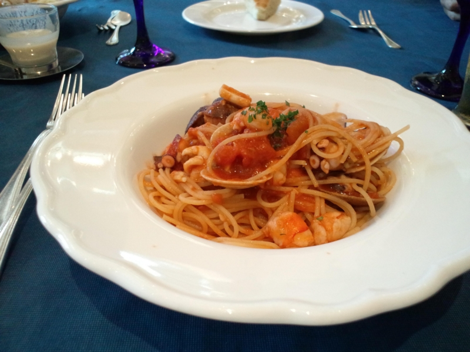
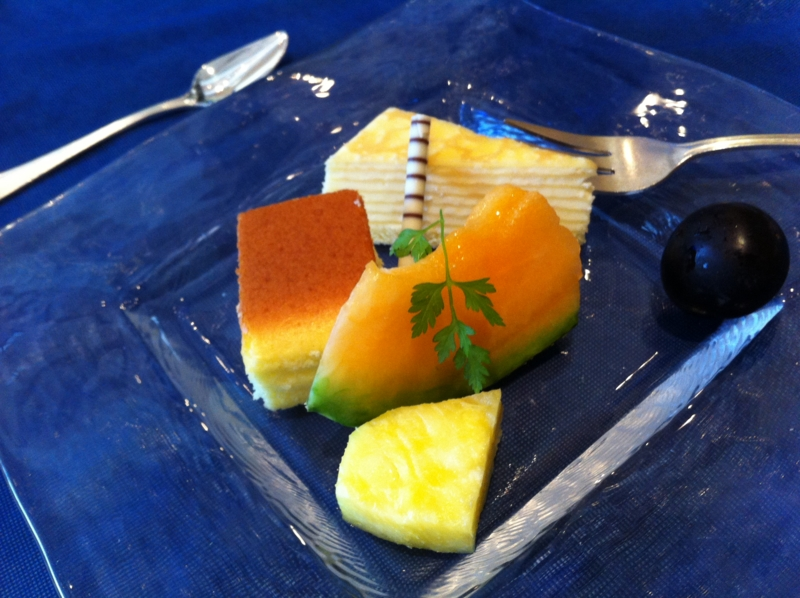

前菜製造機を偵察してきた
公開日：
スマートフォン勉強会@関東 #21 に参加してきました - だるろぐ のあとは、実家にちょっと顔を出しに。「インターネットの画面が変わってしまって困っている」というので、それを直してあげたのだけれど、なんのことはない、「Google ツールバー」をインストールしたせいでスタートページが Google のトップページになっていただけだった。万年初心者の「なにもしてないのにパソコンが壊れた」は本当に信用がならない。
まぁ、そんなのはともかく。
そこでちょっと小耳にはさんだのだけど、最近弟2号がシャレオツなイタリア料理店で働いているらしい。ちょっと面白いので、おかんと弟1号とで翌日ランチタイムに偵察へ行くことに。

お店に行くと、少し小柄で見慣れた物体がオープン厨房の隅っこでくるくる働いている。ひたすら前菜の皿を製造しているようだ。それがこのカルパッチョ。まぁ、まぁ、美味しい。

弟2号が働いているというからフツーのお店だろうとタカをくくっていたのだけど、案外お高い店だった、というかほとんどレストランだった。おれなんかサンダルでスタスタ店に入ったのだけど、かなり浮いていたと思う。弟1号なんかジャージだしな。さすがにおかんは普通のカッコしてたけど。

お昼はこのフォカッチャが食べ放題なのらしい。しかも、家族だといえば割引もあったらしい。あとで弟2号に聞いた。そういうことは早く言え。
ちなみに、なぜかここのメシ代は俺持ちだった。なんか諭吉がひとり行方不明になったのだけど……どういうこと……。まぁ、ランチで助かった。ディナーだったら完全に死んでた。